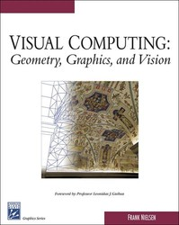

<h3>Web supplements</h3>
<center>
Click on the chapter links below to access the C++/OpenGL(R) source codes.<br>
&nbsp;
</center>
<br>

<A HREF="foreword.html" TARGET="_listprogs">Foreword by Prof. L. J. Guibas</A>


<OL>
<LI><A HREF="overview.html" TARGET="_listprogs">Overview</A>
<LI><A HREF="chapters/adt.html" TARGET="_listprogs">Abstract Data Structures</A>
<LI><A HREF="chapters/coordinatepipelines.html" TARGET="_listprogs">Coordinate Pipelines</A>
<LI><A HREF="chapters/images.html" TARGET="_listprogs">Images</A>
<LI><A HREF="chapters/meshes.html" TARGET="_listprogs">Meshes</A>
<LI><A HREF="chapters/animation.html" TARGET="_listprogs">Animation</A>
<LI><A HREF="chapters/randomization.html" TARGET="_listprogs">Randomization</A> 
<A HREF="visualcomputing-chapter7-colorlowres.pdf" TARGET="_listprogs"></A>

<LI><A HREF="chapters/higherdimensions.html" TARGET="_listprogs">Higher Dimensions for 3D</A>
<A HREF="VC-HighDim3D.pdf" TARGET="_listprogs"></A>

<LI><A HREF="chapters/robustness.html" TARGET="_listprogs">Robustness</A>
<A HREF="VC-Robustness.pdf" TARGET="_listprogs"></A>
</OL>
<BR>

<A HREF="visualcomputing-bibliography.pdf" TARGET="_listprogs">Bibliography in PDF </A>
<BR>
&nbsp;
<BR>

<A HREF="chapters/allchapters.html" TARGET="_listprogs">View all source codes at once</A><BR>
&nbsp;<BR>

Note for <A HREF="chapters/compilations.html" TARGET="_listprogs">compiling programs</A>.
<BR><BR>
All Windows(R) exes in a <A HREF="visualcomp-exes.zip">Zip file</A>.<BR>
(for some progs you need to download source data)
<BR>
&nbsp;<BR>

<BR>
<HR>
Version 1.01, August 2005.<BR>
(Frank.Nielsen@acm.org)